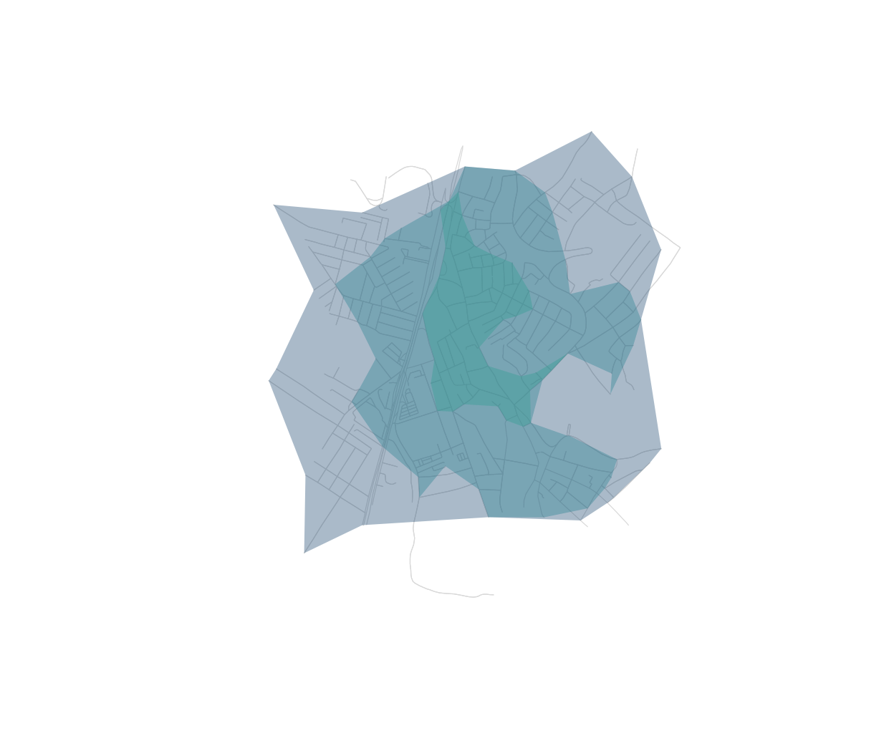

A central use of street networks is accessibility: who can reach a service, and how quickly (Foti 2014; Liu et al. 2022). The pattern is always the same — snap facilities to the network, then solve shortest paths or isochrones, weighted by distance or travel time. It underpins studies of urban mobility, green mobility (“Fluxo Verde”), and access to schools, hospitals and parks.
We use the bundled real network of central Olinda, Brazil, with travel times, so this runs offline.
g <- ox_add_edge_travel_times(ox_example("olinda"))Travel-time service areas from a facility
Suppose a clinic sits near the centre. Its isochrones are the nested areas reachable within each time budget:
clinic <- ox_nearest_nodes(g, x = -34.8553, y = -8.0089)
iso <- ox_isochrone(g, clinic, cutoffs = c(60, 120, 180), weight = "travel_time")
iso[c("cutoff", "n_nodes")]
#> Simple feature collection with 3 features and 2 fields
#> Geometry type: POLYGON
#> Dimension: XY
#> Bounding box: xmin: -34.86427 ymin: -8.017667 xmax: -34.84766 ymax: -7.999988
#> Geodetic CRS: WGS 84
#> cutoff n_nodes geometry
#> 1 180 468 POLYGON ((-34.86237 -8.0066...
#> 2 120 368 POLYGON ((-34.86141 -8.0064...
#> 3 60 104 POLYGON ((-34.85679 -8.0048...
plot(g, col = "grey85", lwd = 0.6)
plot(sf::st_geometry(iso), add = TRUE, border = NA,
col = grDevices::adjustcolor(c("#0d3b66", "#1f7a8c", "#2a9d8f"), 0.35))
Nearest facility for each origin
With several facilities and several demand points (homes), a distance matrix gives the travel time from every home to every facility; the row minimum is each home’s nearest facility:
homes <- ox_nearest_nodes(g,
x = c(-34.8505, -34.852, -34.8585),
y = c(-8.0125, -8.006, -8.011))
facilities <- ox_nearest_nodes(g,
x = c(-34.8553, -34.8500),
y = c(-8.0089, -8.0140))
m <- ox_distance_matrix(g, from = homes, to = facilities, weight = "travel_time")
round(m) # seconds, homes x facilities
#> 8945592343 5515883370
#> 1206764895 76 38
#> 1499391454 73 164
#> 7272198752 95 176
round(apply(m, 1, min)) # travel time to the nearest facility
#> 1206764895 1499391454 7272198752
#> 38 73 95On real data
With network access, the facilities come straight from OpenStreetMap
via the features module, and the workflow is identical:
g <- ox_graph_from_place("Olinda, Brazil", network_type = "drive") |>
ox_simplify() |>
ox_add_edge_travel_times()
hospitals <- ox_features_from_place("Olinda, Brazil", tags = list(amenity = "hospital"))
xy <- sf::st_coordinates(hospitals)
origins <- ox_nearest_nodes(g, xy[, 1], xy[, 2])
# 10- and 20-minute drive-time service areas across all hospitals
ox_isochrone(g, origins, cutoffs = c(600, 1200), weight = "travel_time")Overlay population on those polygons and you can quantify how many people fall outside a 20-minute reach — the core question in accessibility and territorial planning.